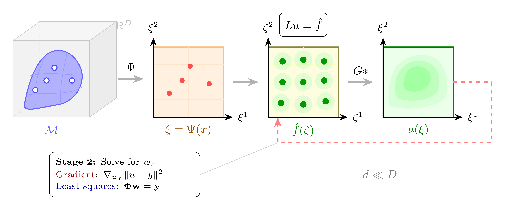
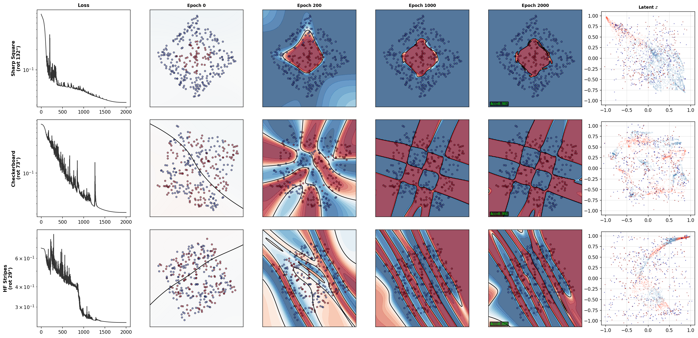
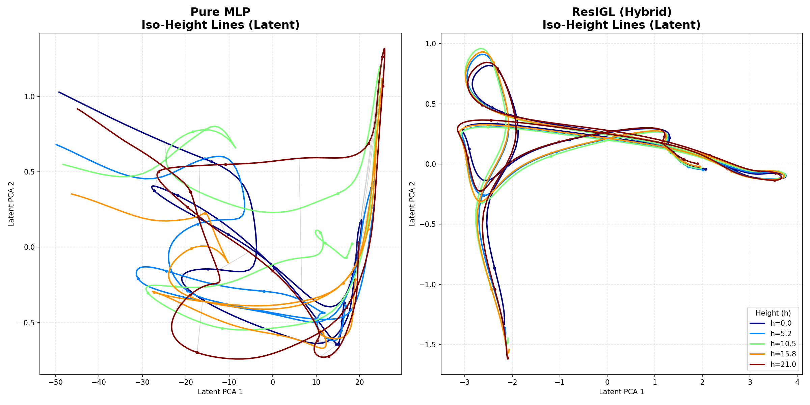
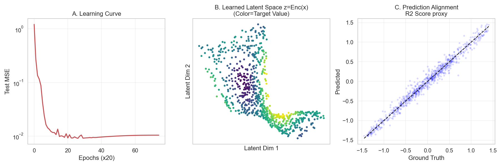
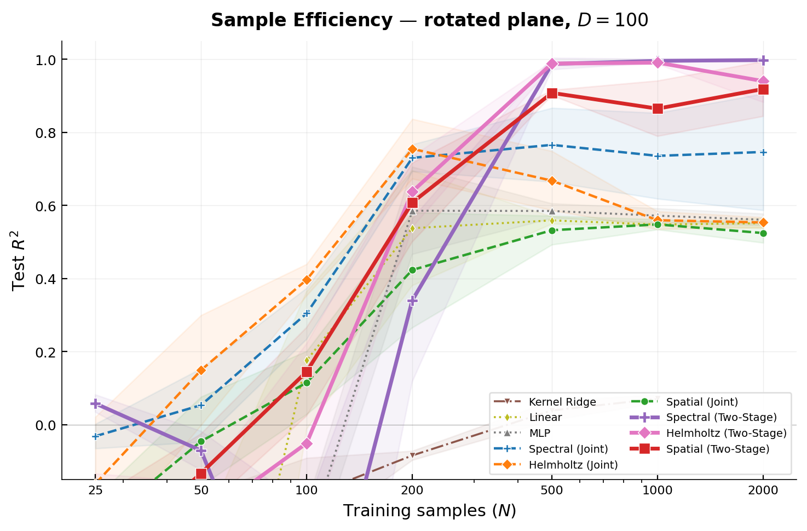
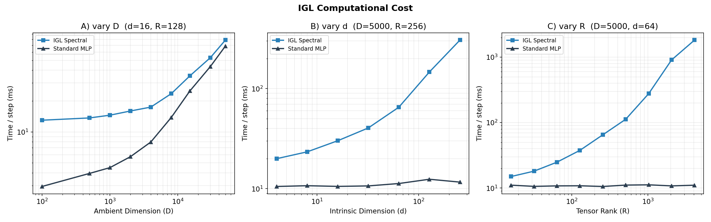
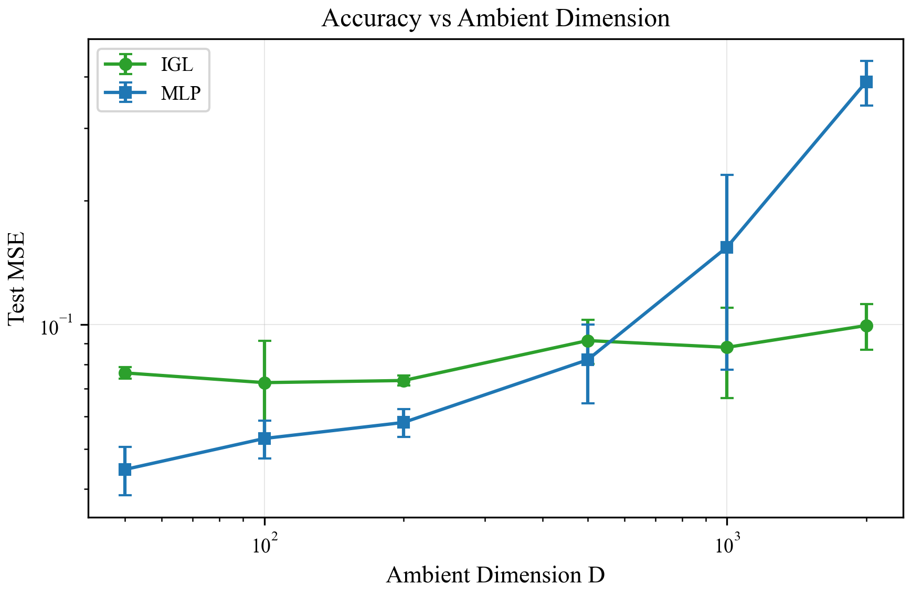
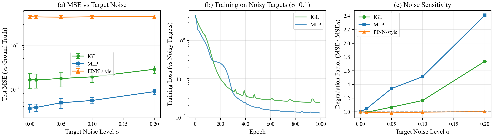
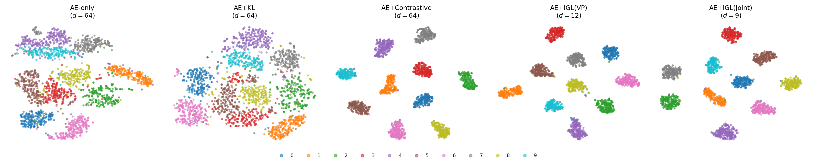

This article presents Intrinsic Green’s Learning (IGL), introduced at the AI & PDE Workshop @ ICLR 2026. IGL was originally conceived as a geometric diagnosis tool, a way to probe whether a model’s learned representations actually respect the manifold structure of the data. Along the way, it grew into a full architectural framework that generates its own inductive biases from PDE theory.
This post covers the content of the original paper, the core architecture, the factorization trick, the two-stage algorithm, and the experiments. We have plenty of exciting developments that go well beyond the original diagnostic tool, task-conditioned dimension theory, Matryoshka mechanisms, AtlasBlock for Language Models, full manifold reconstruction with non-Euclidean metric recovery, SPD manifolds, and more, but those will be the subject of upcoming articles.
Introduction¶
There is a standard story in deep learning: data lives on a low-dimensional manifold hidden inside a high-dimensional ambient space. The manifold hypothesis is well-supported empirically, MNIST digits sit on a roughly 10–15 dimensional manifold inside \(\mathbb{R}^{784}\), and modern language model activations cluster in structured low-dimensional subspaces. But knowing the hypothesis and exploiting it architecturally are two different things. If you could discover the manifold structure, its intrinsic dimension, a good coordinate chart, and the geometry of the embedding, the payoff would be substantial:
- Sample efficiency improves because the model only needs to learn a \(d\)-dimensional function instead of a \(D\)-dimensional one
- Generalisation improves because the inductive bias matches the true data structure
- Interpretability improves because the learned coordinates carry geometric meaning
- Compression becomes principled because you know which dimensions are active and which are redundant
Most architectures just let the network figure it out implicitly. Some methods, autoencoders, contrastive learning, PCA-based projections, try to make the low-dimensional structure explicit, but they treat it as a preprocessing step disconnected from the prediction task. What would it mean to build an architecture where the manifold structure is inseparable from the learning objective?
This is the question IGL answers, by reframing supervised learning as an inverse PDE problem. The full pipeline is shown in Figure 1: an encoder \(\Psi\) maps ambient data to intrinsic coordinates, a tensor-factored source defines the learned function, and Green’s convolution produces the solution, all optimised via a two-stage algorithm.

Figure 2 illustrates the setup on the Swiss Roll, a 2D manifold embedded in \(\mathbb{R}^3\). Note that IGL does not physically unroll the manifold: the encoder is free to discover any coordinate chart that makes the target function easy to represent. The visualisation is pedagogical, in practice, the learned chart is task-optimal, not necessarily isometric.
The Setup: Learning a Function on a Manifold¶
Let’s be precise about the problem. We have training observations \(\{(x^{(n)}, y^{(n)})\}_{n=1}^N\), where the inputs \(x^{(n)} \in \mathbb{R}^D\) lie on some unknown manifold \(\mathcal{M} \subset \mathbb{R}^D\) with intrinsic dimension \(d \ll D\). We want to learn a function \(u\) on the manifold to the solution space of the problem at hand, for instance \(u : \mathcal{M} \to \mathbb{R}^C\) for \(C\)-class classification.
The conventional approach says: parameterize \(u\) as a neural network and minimize empirical loss. This works, but it ignores the manifold structure entirely. The network spends capacity learning that the function doesn’t vary in \(D - d\) directions it doesn’t need to care about.
IGL takes a different route. Instead of learning \(u\) directly, it frames \(u\) as the solution to a linear PDE:
The IGL Ansatz:
Frame the target function \(u\) as the solution to \(Lu = f\), where \(L\) is a chosen differential operator and \(f\) is a learned source term. This is not a physical claim, there is no actual PDE being solved in nature. It is an architectural choice.
The key insight is that we never need to solve the PDE explicitly. The solution to \(Lu = f\) is given by \(u = G * f\), where \(G\) is the Green’s function of the operator \(L\), a known mathematical object. We just need to evaluate the convolution \(u(\xi) = \int G(\xi, \zeta) f(\zeta) \, d\zeta\), and this integral is where the architecture does its work.
This framing buys three things simultaneously:
-
A decomposable representation. The Green’s function \(G\) admits a low-rank separable approximation, which makes the convolution efficiently computable, as we will see in the next section.
-
A smoothing inductive bias. Integration is a stable, smoothing operation. Unlike differentiation, it doesn’t amplify noise.
-
Linearity in source weights. Once the coordinate chart is fixed, the mapping from \(f\) to \(u\) is linear. This separates geometry learning (nonlinear, hard) from function fitting (linear, easy).
Figure 3 makes this concrete: for the 2D Laplacian \(L = -\Delta\), a source \(f\) made of several Gaussian bumps is convolved with the Green’s function \(G(r) \propto \log r\) to produce the smooth solution \(u\). Toggle individual source components and adjust their scale to see how the convolution responds, note how integration smooths out sharp features.
The IGL Framework¶
Now that we have the PDE ansatz, here is how the full architecture works. This section gives the complete picture; the subsections that follow develop each component in detail.
Choose an operator. The differential operator \(L\) is a design choice made before training, the Laplacian for smooth fields, Helmholtz for localized features, Gabor atoms for textures. Each operator defines a different Green’s function \(G\), encoding a prior about what kind of function the data requires.
Encode to intrinsic coordinates. An encoder \(\Psi\) (a standard MLP or CNN) maps each input \(x \in \mathbb{R}^D\) to intrinsic coordinates \(\xi \in \mathbb{R}^d\). Each coordinate is multiplied by a learnable gate \(g_j \in [0,1]\): during training, a sparsity penalty drives unnecessary dimensions to zero. Strictly speaking, what IGL discovers is not the topological intrinsic dimension of the manifold, but rather the minimal number of nonlinear components needed to express the target function on the manifold in the ambient space coordinates. These two quantities often coincide (as on MNIST), but the distinction is important, we will provide further experiments and theory on this in a future article on task-conditioned dimension. The encoder’s job is to find coordinates where the target function decomposes as a product of univariate terms, minimising tensor rank, not preserving distances.
Factor the integral. Both the source \(\hat{f}\) and the Green’s function \(G\) are parameterized as sums of separable products. Fubini’s theorem then splits the \(d\)-dimensional convolution into \(d\) independent 1D integrals, reducing cost from \(O(N^d)\) to \(O(KRd)\), linear in dimension.
Solve in two stages. Joint optimization leads to dimensional collapse: the encoder takes shortcuts and the geometry is never recovered. IGL uses Variable Projection: at every step, source weights are solved exactly by least squares (Stage 2), then the encoder updates by gradient descent (Stage 1). The envelope theorem guarantees the encoder gradient reflects only coordinate quality.
The complete model output is:
The polynomial augmentation handles the null space of \(L\) (e.g. constants for the Laplacian). The parameter split is clean:
| Stage | Parameters | Optimized by |
|---|---|---|
| Stage 1 (outer) | Encoder \(\theta_\Psi\), gates \(g_j\), anchors \(\mu_{r,j}\), kernel scales \(\sigma_{k,j}\) | Gradient descent |
| Stage 2 (inner) | Source weights \(w_r\), polynomial coefficients \(c_\beta\) | Exact least squares |
Beyond PDEs
While the framework is motivated by PDE theory, its reach extends further: any positive-definite kernel defines an integral operator whose structure parallels Green’s convolution. This opens the door to connecting IGL with attention mechanisms, whose exponential dot-product kernel shares the multiplicative structure of a separable Green’s function, a direction we are actively exploring.
Figure 4 shows the full architecture diagram. The following subsections develop each component in detail.
The Factorization Trick¶
How do you compute a d-dimensional integral without paying exponential cost?
Computing \(u(\xi) = \int_\Omega G(\xi, \zeta) f(\zeta) \, d\zeta\) naively in \(d\) dimensions costs \(O(N^d)\), exponential in the intrinsic dimension. IGL escapes it through tensor decomposition.
The idea is simple: if both \(f\) and \(G\) factor as products of univariate functions, Fubini’s theorem splits the \(d\)-dimensional integral into \(d\) independent 1D integrals.
Step 1: Factorize the source. Parameterize \(f\) as a rank-\(R\) CP (Canonical Polyadic) decomposition:
Each \(\phi_{r,j}\) is a univariate basis function (e.g. a Gaussian RBF centered at anchor point \(\mu_{r,j}\)). The \(w_r\) are scalar weights. This representation has \(O(Rd)\) parameters, linear in both rank and dimension, not exponential.
Step 2: Factorize the Green’s function. Approximate \(G\) as a rank-\(K\) sum of separable kernels:
This is not an approximation we pull from thin air. For elliptic operators (Laplacian, Helmholtz), the exponential sum trick provides a rigorous bound: the rank \(K\) needed to achieve approximation error \(\varepsilon\) scales as \(O(\log(1/\varepsilon))\), independent of dimension. This means \(K\) does not grow exponentially to approximate \(G\) as separable, and this is why IGL has dimension-independent cost in the Green’s function component.
What about the source rank \(R\)?
Unlike \(G\), the source \(f\) has no a priori low-rank guarantee. The rank \(R\) needed for the CP decomposition of \(\hat{f}\) depends entirely on the coordinate chart chosen by the encoder. A bad chart can make even a simple function require high rank, for example, a Gaussian \(e^{-r^2}\) is rank-1 in Cartesian coordinates but needs cross-terms in a rotated frame. This is precisely why the encoder \(\Psi\) is essential: its job is to find coordinates where the target admits a low-rank decomposition. The Group Lasso penalty on source weights creates pressure to minimise \(R\), but the achievable rank is task-dependent and coordinate-dependent, not guaranteed by theory.
Step 3: Apply Fubini. Substituting both decompositions into the integral:
Because each term in the integrand depends on exactly one \(\zeta^j\), the \(d\)-dimensional integral factors into a product of \(d\) independent 1D integrals \(I_{k,r,j}\). Total cost: \(O(KRd)\) per sample, linear in the intrinsic dimension \(d\).
| Method | Principle | Per-sample cost |
|---|---|---|
| MLP (2 layers, width W) | Composition | \(O(DW^2)\) |
| PINNs | Differentiation | \(O(DW^2)\) |
| Kernel Ridge | Integration | \(O(N^2)\) |
| KANs (grid size G) | Composition | \(O(DG)\) |
| Neural Operators | Integration | \(O(N_{\text{modes}}^d)\) |
| IGL | Integration | \(O(DW^2 + KRd)\) |
Figure 5 visualises this factorization interactively, hover over the 2D source to see how it decomposes into 1D factors.
Finding the Right Coordinates¶
Why does the coordinate system matter for tensor decomposition?
The factorization above requires something crucial: that the source \(\hat{f}\) actually admits a low-rank tensor decomposition. This is not free. It depends on the coordinate system.
Consider a radial function \(f(r) = e^{-r^2}\). In polar coordinates, this is rank-1 (\(f(r, \theta) = e^{-r^2} \cdot 1\)). In Cartesian coordinates, the same function \(f(x, y) = e^{-(x^2+y^2)}\) is… also rank-1 (\(e^{-x^2} \cdot e^{-y^2}\)). But rotate the Cartesian frame by 45 degrees, and you need cross-terms. Tensor rank depends on the coordinate chart.
This is why IGL includes an encoder \(\Psi : \mathbb{R}^D \to \mathbb{R}^d\). In practice this is a standard MLP or CNN, nothing exotic about it architecturally. But its role is specific: find the coordinate chart in which the target function has lowest tensor rank.
The theoretical grounding here comes from approximation theory. Functions with bounded mixed derivatives, also called Korobov smoothness, admit efficient tensor-product approximations where the approximation error scales as \(O(N^{-r} (\log N)^{d-1})\) rather than the standard \(O(N^{-r/d})\). The encoder’s job is to discover coordinates where the target has this mixed smoothness property. The Group Lasso penalty on source weights creates a feedback loop: poor coordinates require more tensor terms, and penalizing active terms forces the encoder toward charts where fewer ranks suffice.
Chart is task-dependent coordinates
The encoder finds a task-optimal coordinate chart, not the manifold itself. The chart may be diffeomorphic to the true intrinsic coordinates, or it may be a learned approximation that simply makes the function easy to represent. This is a weaker guarantee than manifold discovery, but it is what the architecture actually provides.
Figure 6 demonstrates this concretely: the same radial function has different tensor ranks in different coordinate systems, and IGL’s encoder searches for the chart that minimises rank.
The gauge symmetry. A subtle and elegant property underpins this freedom: the integral \(u(\xi) = \int G(\xi, \zeta) \hat{f}(\zeta) \, d\zeta\) is invariant under coordinate transformations if the source transforms inversely, analogous to gauge freedom in electrodynamics. The encoder is free to discover any diffeomorphic chart that simplifies the tensor decomposition, diagonalizing the function’s complexity rather than the manifold’s geometry. This is both a feature (flexibility, lower optimization cost) and a limitation (coordinates are not geometrically canonical), the right trade-off for prediction, not necessarily for geometric analysis.
The Two-Stage Algorithm¶
Why can’t you just optimize everything jointly?
Here is where things get interesting.
The natural approach would be to jointly optimize all parameters, encoder \(\Psi\), source anchors \(\mu_{r,j}\), source weights \(w_r\), kernel scales \(\sigma_{k,j}\), and mixing weights \(\gamma_k\), simultaneously via gradient descent. This is simple and standard.
It fails. Badly.
The problem is dimensional collapse: the encoder finds degenerate solutions where all information is compressed into one or two coordinates, and the source compensates with high-rank approximations. Or the source memorizes the training data through its capacity, removing any pressure on the encoder to find geometrically meaningful coordinates. The two components co-adapt and the manifold structure is never recovered.
IGL solves this with a Variable Projection (VP) algorithm, a two-stage structure where:
-
Stage 2 (inner, linear): For fixed encoder parameters, solve for source weights \(w_r\) (and null-space coefficients) by least squares: \(w^* = \arg\min_w \|\Phi w - y\|^2\)
-
Stage 1 (outer, nonlinear): Update encoder parameters \(\theta_\Psi\) via gradient descent on the reduced objective: \(\mathcal{L}_{\text{red}}(\theta) = \|y - \Phi(\theta) w^*(\theta)\|^2\)
Because Stage 2 is solved to optimality at every outer step, the gradient of \(\mathcal{L}_\text{red}\) with respect to encoder parameters reflects only coordinate quality, by the envelope theorem, \(\partial \mathcal{L} / \partial w = 0\) at the optimum, so encoder gradients carry no source-fitting confound. The encoder is forced to find a proper chart because source capacity is fully exploited at every step.
The practical consequence is dramatic. On a 2D plane embedded in \(\mathbb{R}^{100}\) with a non-separable multi-frequency target, two-stage training undergoes a sharp sample efficiency phase transition: between \(N=200\) and \(N=500\) samples, all three Green’s kernels cross \(R^2 > 0.9\). At \(N=2000\), Spectral (Two-Stage) reaches \(R^2 = 0.998\) vs. \(\approx 0.55\) for all joint methods. The architectures are identical. The gap is purely in the optimization structure.
Figure 7 shows the phase transition in action.
Automatic Dimension Discovery¶
IGL includes a mechanism for discovering the intrinsic dimension \(d\) automatically, without knowing it in advance.
Each coordinate \(\xi^j\) is multiplied by a learnable gate \(g_j \in [0, 1]\). The Group Lasso penalty on source weights, combined with a sparsity loss on the gates, drives inactive dimensions to zero. Since an inactive coordinate contributes a constant factor of 1 to every kernel product (via \(g_j = 0\), which in log-space contributes \(0\) to the sum), it is cleanly removed from the computation.
The reference implementation uses Hard Concrete gates (Louizos et al., 2018), a stochastic relaxation of \(\ell_0\) regularization. During training, each gate is sampled from a “stretched” binary concrete distribution that can produce exact zeros, enabling principled \(L_0\) regularization. During evaluation, the deterministic distribution mean is used. The effective dimension \(d_\text{eff} = \sum_j P(g_j > 0)\) provides a threshold-free, continuous measure.
Key implementation detail: log-space gate masking
The gate mask must be propagated through to the Green kernel in log-space, not just applied to the encoder output. If inactive dimensions (\(g_j \approx 0\)) are only zeroed in the latent code but not in the kernel product, the anchor points \(\mu_{r,j}\) for inactive dimensions still contribute spurious distance terms. The correct implementation computes:
When \(g_j = 0\), that term contributes 0 to the log-sum, so \(\exp(0) = 1\), a neutral factor. When \(g_j = 1\), the full kernel value is used. This clean interpolation is only possible in log-space.
Figure 8 shows the gate convergence on MNIST, press Play to watch 52 of 64 dimensions shut down during training.
Operator Choice¶
The choice of \(L\) is a hyperparameter encoding a prior about the function’s structure. IGL supports several operators:
| Operator | Green’s function decay | Null space | Best for |
|---|---|---|---|
| Laplacian \(-\Delta\) | Polynomial | Constants + harmonic poly. | Smooth, global fields |
| Helmholtz \(-\Delta + \mu^2\) | Exponential \(e^{-\mu\|z-s\|}\) | Trivial (\(\lambda \geq \mu^2\)) | Localized features, edges |
| Harmonic oscillator \(-\Delta + x^2\) | Gaussian (Gabor atoms) | Trivial (\(\lambda \geq d/2\)) | Objects, structured textures |
| Fractional \((-\Delta)^s\) | Power-law | Constants (\(s < d/2\)) | Long-range correlations |
The smoothness bias of the Laplacian is often cited as a limitation of Green’s function methods: the Laplacian is a low-pass filter, and sharp edges require summing many modes (Gibbs phenomenon). IGL overcomes this through Gabor bases, operator superposition (combining multiple operators by linearity), and multi-scale decomposition (the exponential sum naturally provides multiple resolutions).
The Gabor basis results (Figure 17) show progressive improvement as the encoding becomes more geometry-aware. Figure 9 provides an interactive operator gallery, click each operator to inspect its Green’s kernel.

Curved Manifolds¶
On a curved manifold, the integration measure includes the metric volume element \(\sqrt{|g|}\), which mixes coordinates and breaks the Fubini factorization. IGL handles this by absorbing the metric into the source: define \(\hat{f}(\zeta) = \tilde{f}(\zeta) \cdot \sqrt{|g(\zeta)|}\). The integral factors cleanly, and the optimization finds whatever compensated source makes \(G * \hat{f}\) fit the targets. The metric compensation is entirely implicit, we never compute \(\sqrt{|g|}\) explicitly.
Compensated source limitation
The learned \(\hat{f}\) is not the physical source of any particular PDE. It is a “compensated” source that encodes the full geometry. If your goal is to recover the physical source term or the Green’s function of the manifold’s Laplace-Beltrami operator, IGL does not directly provide this, the compensated mechanism absorbs metric information into the learned source rather than exposing it. However, we have since developed methods to perfectly recover the metric tensor with theoretical guarantees for contractible manifolds (e.g. smooth MLP-generated manifolds, SPD manifolds). This will be the subject of a dedicated upcoming article.
ResIGL: IGL as a Geometric Regularizer¶
Because IGL is not a drop-in replacement for generic deep learning, the paper proposes a hybrid architecture:
The IGL branch has few Stage-2 parameters (\(O(KR)\)) and integration is a smoothing operation, so it is inherently topology-preserving. The MLP residual captures sharp features without destroying the underlying geometry.
On the Swiss Roll with a discontinuous target \(y = \text{sign}(\sin(t))\), pure MLP produces tangled, crossing iso-height curves, geometric collapse. ResIGL keeps iso-height curves stratified while still fitting the sharp transitions. The IGL branch acts as a topological scaffold; the MLP refines within that scaffold. The iso-height comparison (Figure 18) and Figure 10 both illustrate this contrast.

Experiments¶
In all experiments, the manifolds are embedded in ambient space via a random rotation so that intrinsic coordinates are never axis-aligned. This is critical: an axis-aligned embedding would make the tensor decomposition trivially separable, removing any need for the encoder to discover meaningful coordinates. The rotation ensures the encoder must genuinely learn the manifold structure.
Topology Preservation (Exp. 1)¶
On the Swiss Roll, two-stage training achieves over \(100\times\) lower MSE than joint training, and recovers the correct 2D manifold topology (Figure 11). Joint training collapses to 1D or a tangled cluster. In the harder “rotated + coupled target” setting (target \(u = \sin(t)\cos(h)\) where \(t, h\) are the intrinsic coordinates), joint training fails completely while two-stage training acts as a blind source separator.

Sample Efficiency Phase Transition (Exp. 2)¶
On a 2D plane in \(\mathbb{R}^{100}\), two-stage training undergoes a sharp phase transition between \(N=200\) and \(N=500\): all three Green’s kernels cross \(R^2 > 0.9\), while jointly-trained methods plateau near 0.55–0.77 and never recover even at \(N=2000\) (Figure 12).

Scalability (Exp. 3)¶
Stage 2 cost scales linearly in \(d\) and \(R\), and is negligible compared to the encoder across all tested scales. For \(K \leq 10\), \(R \leq 64\), \(d \leq 10\), Stage 2 adds less than 5% to total compute. The scaling plots confirm this (Figure 13), alongside accuracy vs. ambient dimension (Figure 14) and noise robustness (Figure 15).



MNIST Latent Space Regularization (Exp. 7)¶
IGL is used as a regularizer for a convolutional autoencoder on MNIST (20k samples, 10 classes). A 64-dimensional latent space feeds both a CNN decoder (reconstruction) and an IGL head with learnable gates (classification).
| Method | MSE ↓ | Lin. Probe ↑ | Silhouette ↑ | Smooth ↓ | Active Dims |
|---|---|---|---|---|---|
| AE-only | 0.0021 | 0.918 | 0.060 | 0.139 | 64 |
| AE+KL | 0.0073 | 0.933 | 0.042 | 0.156 | 64 |
| AE+Contrastive | 0.0023 | 0.992 | 0.744 | 0.172 | 64 |
| AE+IGL (Two-stage) | 0.0036 | 0.991 | 0.630 | 0.122 | 12 |
| AE+IGL (Joint) | 0.0025 | 0.990 | 0.470 | 0.123 | 9 |
AE+IGL (Two-stage) is the only method that simultaneously achieves near-optimal classification accuracy (0.991), strong geometric structure (silhouette 0.630), best label smoothness (0.122), and automatic dimension discovery (12 of 64 gates active). The discovered dimension of 12 is consistent with prior estimates of MNIST’s intrinsic dimension (10–15).
Contrastive learning achieves the best silhouette score but retains all 64 dimensions and shows the worst label smoothness. Joint IGL gets comparable accuracy but lower silhouette, confirming that co-adaptation allows class collapse into point clusters. The two-stage mechanism is doing real work. The t-SNE visualisations (Figure 16) show the latent space structure.

Discussion¶
What IGL Does Not Provide (Yet)¶
- IGL is not a general-purpose replacement for MLPs. It requires that the source admits low-rank tensor factorization in the learned coordinates, which is a structural assumption. Its strength lies in settings where geometric structure matters, low-data regimes, interpretability requirements, and problems where coordinate or dimension discovery is the goal.
- It does not recover the physical Green’s function of the underlying manifold. The compensated source absorbs metric corrections, so the learned \(\hat{f}\) is not the “true” source of any natural PDE. However, we already have solutions using Stäckel conditions and orthogonality pressure when the task is set as reconstruction (\(f(x) = x\)).
- The encoder finds a chart that minimizes prediction error, which may or may not preserve manifold distances, isometric coordinate discovery is not guaranteed. We are exploring the use of Normalizing Flows to preserve isometry by construction rather than via a loss function term.
- The Stage-2 least squares solve is \(O(N \cdot (KR)^2)\), feasible for thousands of samples, not millions. We are working on recursive least squares and continuous Variable Projection to circumvent this limitation.
Connection to Related Work¶
vs. KANs: Both decompose into univariate components. KANs use function composition (\(u = \sum_q \Phi_q(\sum_p \phi_{q,p}(x_p))\)); IGL uses integral convolution. Crucially, IGL’s two-stage structure separates coordinate discovery from univariate fitting, while KANs optimize both simultaneously, hence the dimensional collapse problem.
vs. Neural Operators (DeepONet, FNO): Neural operators learn the mapping \(f \mapsto u\) as a function space mapping. IGL uses the PDE structure as an architectural prior for supervised learning, not as something to approximate. The operator \(L\) is chosen, not learned from PDE data.
vs. PINNs: PINNs enforce physics via \(\|Lu_\theta - f\|^2\) residuals and learn \(u\) directly. IGL approaches from the integral side: \(u = G * f\), learn \(f\). The integral formulation inherits PDE structure without requiring differentiation of the network.
vs. Contrastive/VAE methods: These separate representation learning from prediction. IGL integrates them: the encoder’s gradient comes directly from prediction quality, mediated by whether the coordinates admit low-rank source decomposition.
Conclusion¶
IGL reframes supervised learning as an inverse PDE problem: instead of approximating \(u\) directly, learn a source term \(f\) and integrate it against a Green’s kernel. The PDE framing is not decoration, it is structurally generative, producing tensor factorization, the two-stage algorithm, the gate mechanism, and the operator choice framework as natural consequences of a single principle. However, beyond solving PDEs on a given or unknown manifold, any positive-definite kernel defines an integral operator whose structure parallels Green’s convolution, and we are now exploring how to leverage this observation with attention mechanisms, whose exponential dot-product kernel shares the multiplicative structure of a separable Green’s function.
The central result is the factorized integral: by decomposing both source and Green’s function as low-rank tensors, Fubini’s theorem collapses a \(d\)-dimensional integral to \(O(KRd)\) cost, linear in intrinsic dimension. The two-stage (Variable Projection) algorithm ensures source capacity is fully exploited at every step, forcing the encoder to genuinely discover meaningful manifold coordinates rather than exploiting representational shortcuts.
The experiments confirm three properties: topology preservation (two-stage training prevents dimensional collapse), sample efficiency (sharp phase transition vs. joint training), and automatic dimension discovery (12 of 64 gates active on MNIST, consistent with prior estimates of 10–15).
IGL is best used as a geometric regularizer or parallel head alongside flexible models, not as a drop-in MLP replacement. Its advantages are strongest when the manifold structure matters for generalization: low-data regimes, interpretability requirements, or problems where coordinate discovery is the goal.